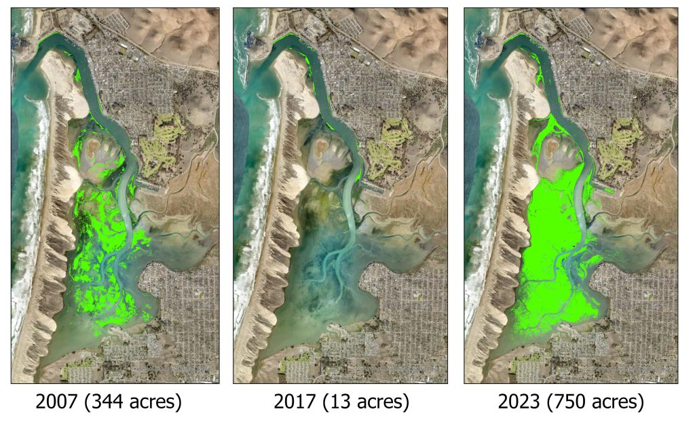
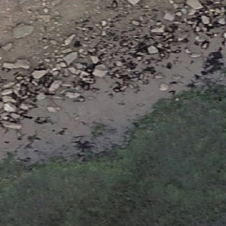
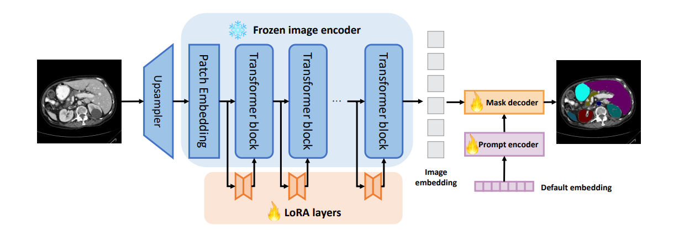
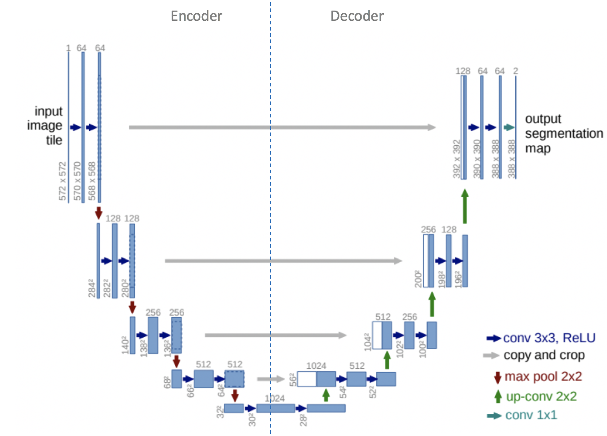
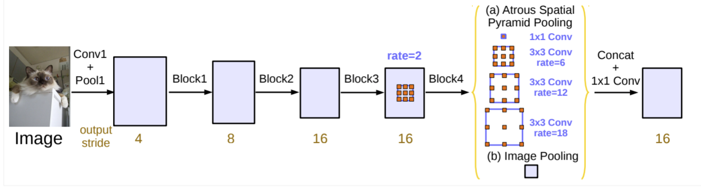
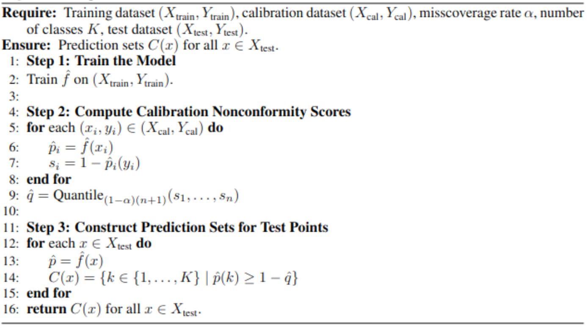
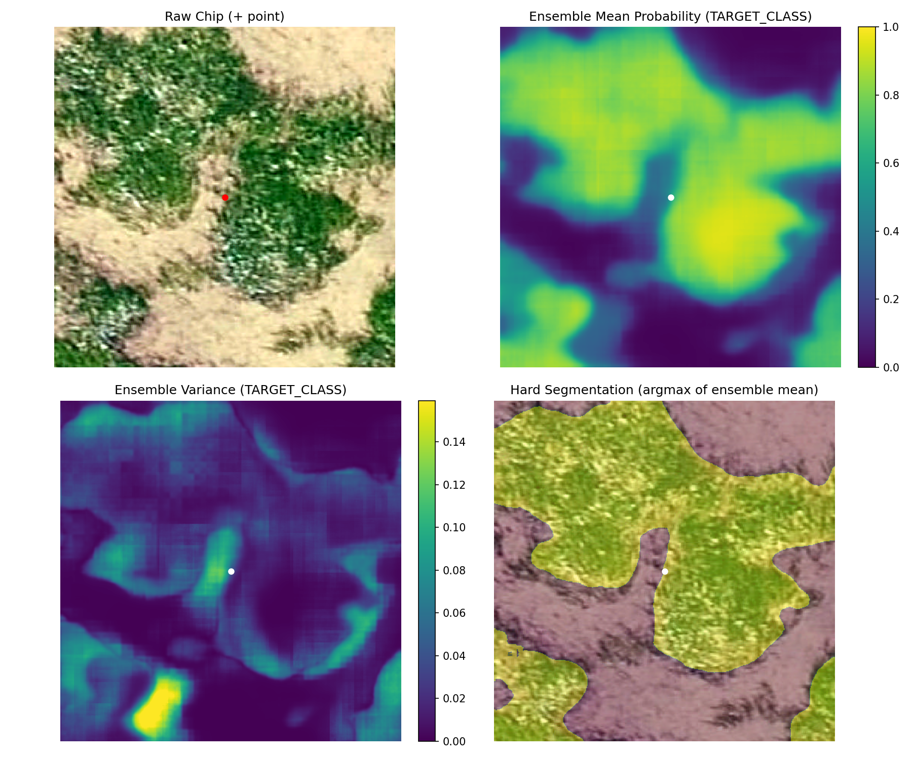
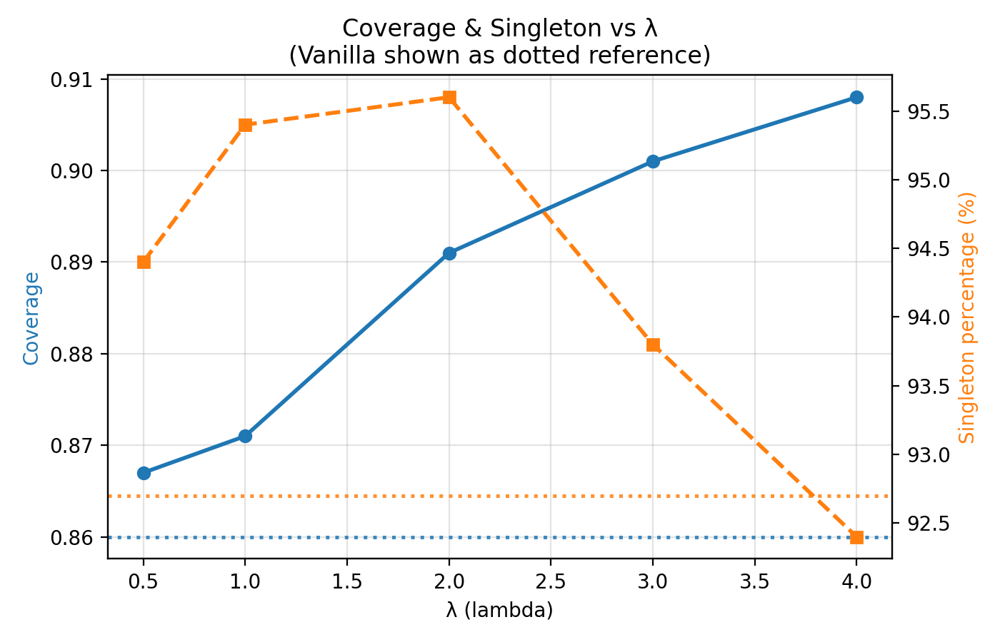
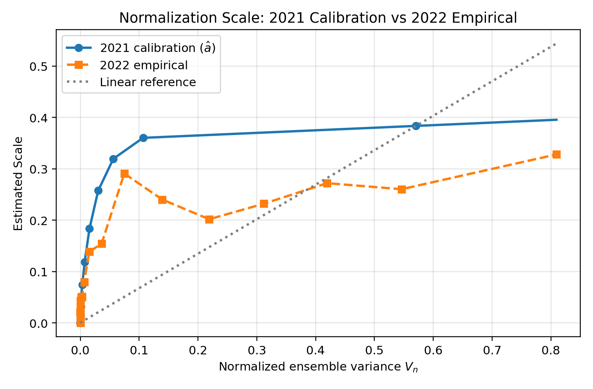
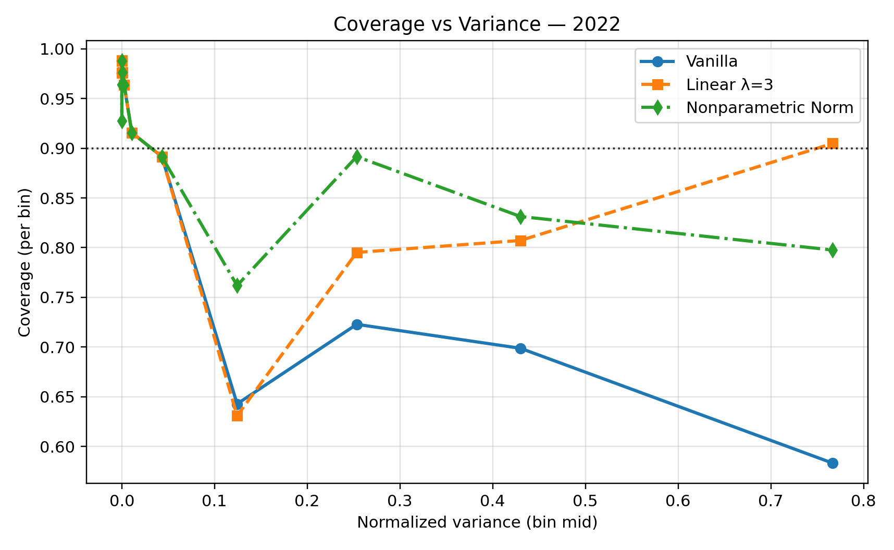

| Method | Coverage (background) | Coverage (eelgrass) | Difference |
|---|---|---|---|
| Vanilla | 0.914 | 0.780 | 0.134 |
| Linear (λ = 3.0) | 0.943 | 0.839 | 0.104 |
| Nonparametric | 0.946 | 0.847 | 0.099 |
Using Ensemble Disagreement as an Epistemic Normalizer for Eelgrass Segmentation under Temporal Drift
Cal Poly San Luis Obispo






Two main limitations:
Replace vanilla score s with \(s_i^\star = s_i/g(v_i), i \in C\). Then do split cp on \(s^\star\).
\[S_{\lambda}(x,y)=\frac{S(x,y)}{1+\lambda V(x)},\quad \lambda \geq 0.\]
Assume scores increase linearly with difficulty
Choose \(\lambda\) via grid search balancing OOD coverage and % singletons (efficiency)
\[S=a(V)U,\quad a(V)>0,\quad U \perp \!\!\! \perp V \Rightarrow\]
\[ S'(x,y) = \frac{S(x,y)}{\hat a(V(x))}, \quad \hat a(V) \approx \mathbb{E}[S \mid V] \]
Assume scores increase multiplicatively
Learn non-linear scaling a(v), no tuning parameter
Primary:
Additional:

| Training Year | Model | Precision | Recall | F Score | Accuracy |
|---|---|---|---|---|---|
| N/A | Ensemble | 0.905 | 0.869 | 0.886 | 0.91 |
| 2021 | U-Net | 0.820 | 0.890 | 0.860 | 0.88 |
| 2021 | SAM LoRA | 0.820 | 0.890 | 0.850 | 0.87 |
| 2021 | DeepLab | 0.880 | 0.800 | 0.840 | 0.88 |
| 2018–2021 | U-Net | 0.880 | 0.780 | 0.830 | 0.87 |
| 2018–2021 | SAM LoRA | 0.810 | 0.800 | 0.810 | 0.84 |
| 2018–2021 | DeepLab | 0.880 | 0.890 | 0.860 | 0.89 |
| Method | q-hat | Coverage | % singletons | % empty | % two-label |
|---|---|---|---|---|---|
| Vanilla | 0.317 | 0.9 | 93.9 | 6.1 | 0.0 |
| Linear (λ = 0.5) | 0.298 | 0.9 | 93.9 | 6.1 | 0.0 |
| Linear (λ = 1.0) | 0.281 | 0.9 | 93.9 | 6.1 | 0.0 |
| Linear (λ = 2.0) | 0.254 | 0.9 | 93.9 | 6.1 | 0.0 |
| Linear (λ = 3.0) | 0.233 | 0.9 | 93.8 | 6.0 | 0.1 |
| Linear (λ = 4.0) | 0.216 | 0.9 | 93.7 | 6.1 | 0.2 |
| Nonparametric | 1.512 | 0.9 | 94.5 | 4.5 | 1.0 |
| Method | Coverage | % singletons | % empty | % two-label |
|---|---|---|---|---|
| Vanilla | 0.860 | 92.7 | 7.3 | 0.0 |
| Linear (λ = 0.5) | 0.867 | 94.4 | 5.6 | 0.0 |
| Linear (λ = 1.0) | 0.871 | 95.4 | 4.5 | 0.1 |
| Linear (λ = 2.0) | 0.891 | 95.6 | 3.0 | 1.4 |
| Linear (λ = 3.0) | 0.901 | 93.8 | 2.5 | 3.7 |
| Linear (λ = 4.0) | 0.908 | 92.4 | 2.1 | 5.5 |


| Method | q-hat | Coverage | % singletons | % empty | % two-label |
|---|---|---|---|---|---|
| Vanilla | 0.317 | 0.860 | 92.7 | 7.3 | 0.0 |
| Linear (λ = 3.0) | 0.233 | 0.901 | 93.8 | 2.5 | 3.7 |
| Nonparametric | 1.511 | 0.906 | 96.4 | 0.8 | 2.8 |

| Method | Coverage (background) | Coverage (eelgrass) | Difference |
|---|---|---|---|
| Vanilla | 0.914 | 0.780 | 0.134 |
| Linear (λ = 3.0) | 0.943 | 0.839 | 0.104 |
| Nonparametric | 0.946 | 0.847 | 0.099 |